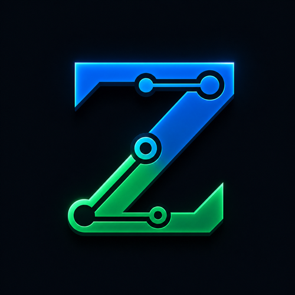
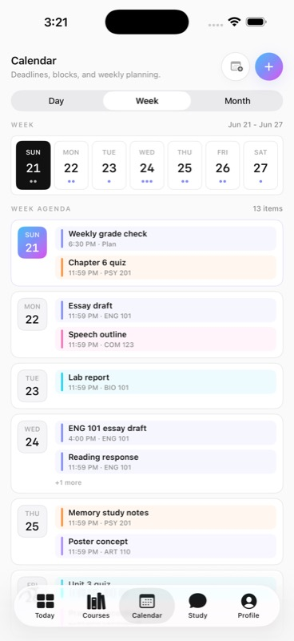
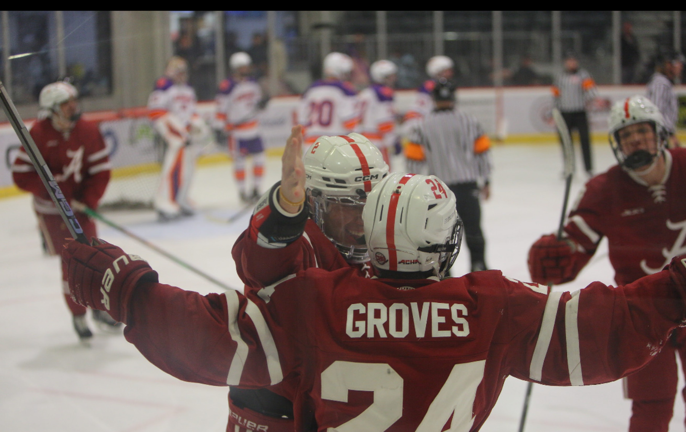

Founder, builder
GradePath
AI-first academic platform for students, focused on grades, deadlines, study planning, and course context.

Zachary Groves AI product portfolio ResumeComputer Engineering student at The University of Alabama, AI Engineering Summer Intern at ISG, founder of GradePath, and student leader building practical AI products.
An AI-powered academic operating system for students. GradePath brings grades, deadlines, study planning, and course context into one product experience across web and native mobile.

Projects, roles, and leadership work across applied AI, product development, research, and team operations.
AI-first academic platform for students, focused on grades, deadlines, study planning, and course context.
Current internship work around enterprise AI, documentation, workflow analysis, and translating AI opportunities into practical business systems.
Undergraduate research context around virtual reality, real-time digital twins, motion tracking, and rehabilitation-oriented analysis.
Leading a student organization focused on making AI more practical and accessible across campus through workshops, projects, and student-facing education.

Team leadership and operations: scheduling, roster planning, communication, budget work, and the day to day discipline of running a club sport.
Resume, GitHub, and LinkedIn in one place.